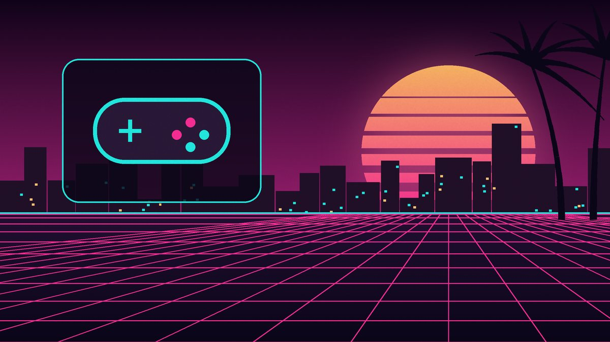

El único truco de dinero de GTA 6: 250.000 dólares, pero solo después de terminar la historia
Entre los 61 códigos de trucos de GTA 6 hay uno que da 250.000 dólares de golpe. La pega es que no se puede usar hasta acabar la campaña, y activarlo tiene una letra pequeña que conviene conocer antes de probarlo.
Por Redacción Golpe Diario · Publicado el

Qué ha pasado
GTA 6 recupera los códigos de trucos clásicos de la saga, hasta 61 en total, pero solo uno da dinero directamente: 250.000 dólares de golpe en la cuenta del personaje. No es un truco pensado para ir sobrado durante la partida normal. Según recoge Tweaktown, está bloqueado hasta terminar la historia principal, así que no sirve de ayuda mientras se avanza por la campaña ni para financiar compras a mitad de juego.
El código se introduce con la cruceta direccional del mando, sin necesidad de abrir ningún menú: arriba, derecha, abajo, izquierda, arriba, izquierda, abajo, derecha. Lo confirman tanto Tweaktown como IBTimes Australia, que describen la misma secuencia de direcciones y coinciden en que el dinero se añade de inmediato en cuanto se completa correctamente, sin ninguna animación ni confirmación adicional en pantalla.
La letra pequeña afecta a los 61 códigos por igual, no solo al del dinero: activar cualquier truco de GTA 6 desactiva los logros y trofeos durante esa sesión de juego y, además, bloquea la opción de guardar partida mientras el truco siga activo. Es una limitación general del sistema de trucos, heredada de otros juegos de la saga, y ambos medios insisten en que no hay forma de evitarla una vez se introduce el código.
Ese bloqueo del guardado tiene una consecuencia práctica que conviene tener clara antes de usar el truco: si se sale del juego o se carga otra partida después de activarlo, el dinero no pasa al archivo de guardado normal. Hay que gastarlo dentro de esa misma sesión, antes de guardar o apagar la consola, porque en cuanto se recupera la partida guardada, el truco deja de estar activo y esos 250.000 dólares desaparecen con él.
En la práctica, el truco funciona más como un capricho puntual dentro de una sesión aislada que como un atajo económico que se pueda repetir o acumular. Quien quiera conservar los logros o mantener limpio el progreso de su guardado principal debería reservarlo para una sesión aparte, ya con la historia terminada y sin trofeos pendientes por conseguir, en vez de usarlo como método habitual para hacer caja.
Qué significa para ti
- Termina primero la historia principal: el truco no funciona antes, por mucho que se repita el código.
- Introduce la secuencia con la cruceta del mando: arriba, derecha, abajo, izquierda, arriba, izquierda, abajo, derecha.
- Si te importan los logros, consíguelos antes de usar el truco: en cuanto lo activas, se desactivan para esa sesión.
- Gasta el dinero en la misma sesión en la que lo activas: al guardar o salir del juego, se pierde y no llega a tu partida normal.
- Mejor en una partida o sesión que no te importe arriesgar, o ya con el 100 % hecho, para no perder logros ni progreso guardado.
Contrastado con: Tweaktown · IBTimes Australia
Sigue leyendo
Los aviones y helicópteros de GTA 6: lista completa y cómo pilotarlos
Rockstar no ha publicado una lista oficial, pero la base de datos de la comunidad ya cuenta diez aviones y nueve helicópteros, y una guía explica paso a paso cómo despegar, volar y aterrizar con cada uno.
El código de la caja fuerte de Avery Pawn Shop cambia en cada partida, y así lo consigues
A diferencia de otros candados de Leonida, la combinación de la caja fuerte de este atraco no es siempre la misma: hay que sacársela a un empleado durante el propio golpe, o buscar la nota de repuesto.
La caja fuerte de Chatfield Storage se abre con 5800, y hay más códigos que no piden pista
En Waxman Island hay un almacén con una caja fuerte, una pistola única y un superdeportivo morado. El código es 5800, y no es el único candado de Leonida que se abre sin tener que buscar la combinación.